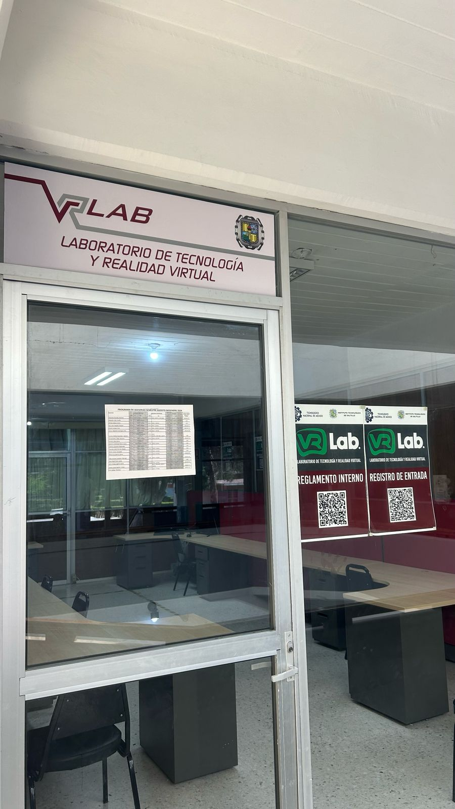

 |
Historia y Origen
¿Cuál es la historia del Laboratorio de Ingeniería Eléctrica?
El Laboratorio de Tecnología y Realidad Virtual fue fundado el 19 de noviembre de 2022 en el campus Miravalle del Instituto Tecnológico de Saltillo. Su propósito principal es ofrecer simuladores educativos de diferentes entornos para uso académico y de investigación por parte de diversas carreras.
Servicios Ofrecidos y Requisitos
¿Qué tipo de proyectos o investigaciones se llevan a cabo en el laboratorio?
El laboratorio se dedica al desarrollo de simulaciones educativas y proyectos en realidad virtual aplicados a diversas áreas de conocimiento. Su objetivo principal es capacitar a docentes de las diferentes áreas para que puedan integrar la realidad virtual en sus clases.
Equipos y Software Utilizado
¿El laboratorio cuenta con algún software especializado?
Sí, el HTC Vive Pro utiliza software especializado como SteamVR y aplicaciones personalizadas que se ajustan a las necesidades académicas del laboratorio.
Normativas y Colaboraciones
¿Qué requisitos debe cumplir un estudiante para poder utilizar el laboratorio?
Los estudiantes deben reservar previamente el laboratorio a través del correo electrónico del encargado. En el futuro, se habilitará una página web para gestionar las reservas. También se debe registrar la entrada mediante un código QR.
Horarios y Recomendaciones para los Estudiantes
¿Cuáles son los horarios de funcionamiento del laboratorio?
El laboratorio está disponible en un horario corrido de 8 am a 8 pm.
Contacto
¿Cómo puedo ponerme en contacto con el laboratorio?
Para más información o reservas, puede contactar a: